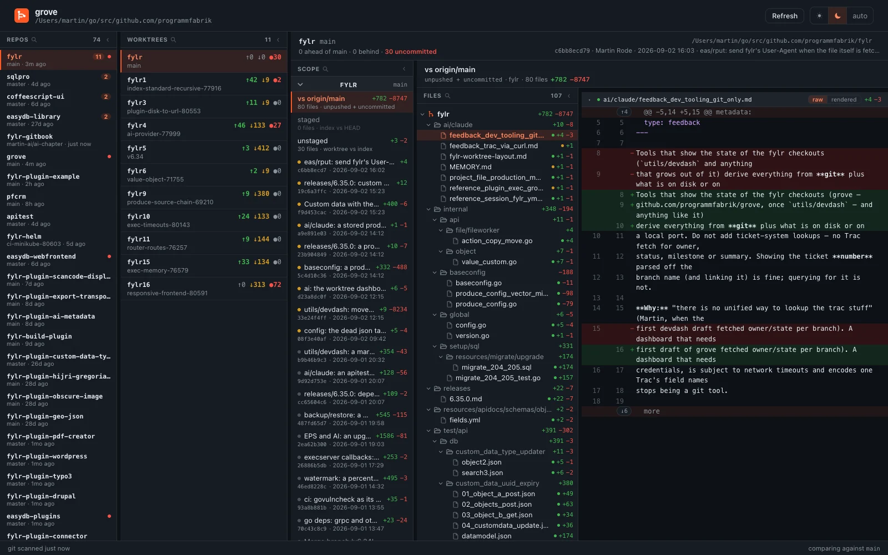
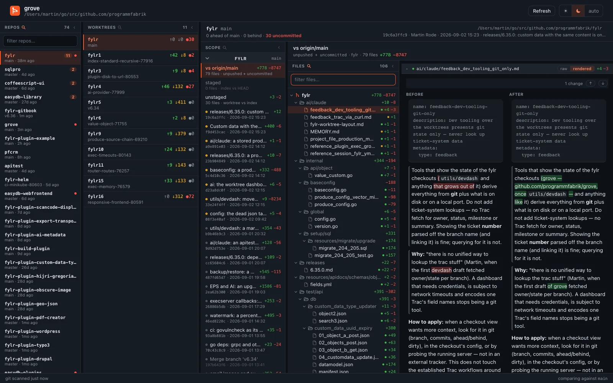
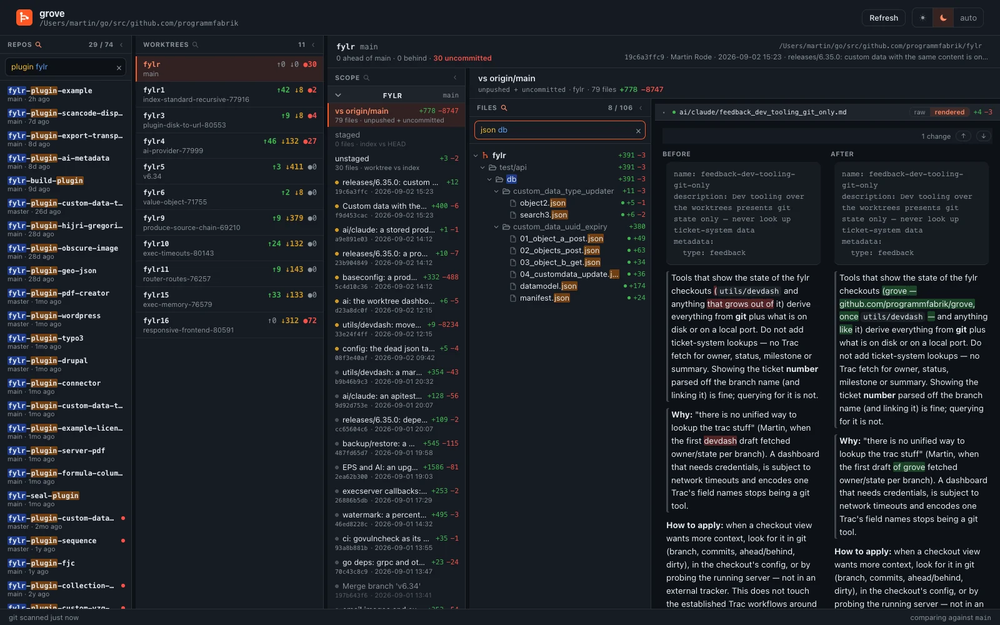

One page over a directory full of git repositories. Two dozen worktrees stop being two dozen terminals.

Three panes
A directory full of clones is how the work is actually laid out — the main project next to the libraries it uses next to two dozen plugin repos. Which of them is interesting changes by the hour.
Sorted by how much is checked out, then by when it was last worked in. Not when it was last
read: scanning a repo touches .git, and a dashboard that made every repo
look freshly used would be worse than none.
Branch, distance from the base branch, how much is uncommitted. Linked worktrees are found wherever they live, a sibling directory included.
What is known about the checkout in the head, and its diff below. Every pane refreshes itself — commit in a terminal and the diff follows without a click.
Nothing compares against a hardcoded main. The base is the branch checked out in the
main repo, so putting a release branch there makes every number and every diff follow it, with no
flag to remember.
The diff
A worktree has several honest answers to “what changed here”, and it needs all of
them. Each is one entry in the scope column, carrying its own file count and +/−.
Not separate views. A file is listed once and marked with where its change lives, because “what is in this worktree” is the question and whether a line is committed yet is a detail of it.
unpushed — still yours to rewrite. not in base — pushed, but the base branch has not got it. landed, and just history now.


How it works
Grove never starts, stops or reconfigures anything. It runs the same commands you would run yourself, on a loopback port nothing outside the machine can reach, and shows you what they said.
Point it at a directory of repositories. It needs git on the path and nothing
else — no daemon, no index, no account, no telemetry.
With dozens of repositories, refreshing all of them on a timer would be waste. A repo is scanned when a request finds its cache stale.
Once a day it asks GitHub whether a newer release exists, and says so if there is one. No
identifier is attached, nothing is downloaded, nothing is installed —
-no-update-check turns even that off.
No telemetry, no analytics, no account. Your repositories are read where they are and the page is served to you alone.
Get it
macOS and Windows for the app. Linux gets the command, which serves the same dashboard to a browser.
The tidiest way: no quarantine to clear, and
brew upgrade keeps it current.
brew tap programmfabrik/grove https://github.com/programmfabrik/grove brew trust --cask programmfabrik/grove/grove brew install --cask grove
The middle line is not optional — Homebrew refuses a cask from a third-party tap until you say you trust it.
go install github.com/programmfabrik/grove@latest
cd ~/src && grove # http://localhost
| Loading… |
These builds are not signed with a Developer ID, so macOS quarantines them on download and Windows SmartScreen warns about a program it has not seen. Neither says anything about the program; both are the cost of an unsigned build.
macOS — after unzipping Grove.app into Applications:
xattr -dr com.apple.quarantine /Applications/Grove.app
Without it, Finder shows a warning and System Settings → Privacy & Security → Open Anyway is the way through. Homebrew avoids all of this.
Windows — More info → Run anyway.